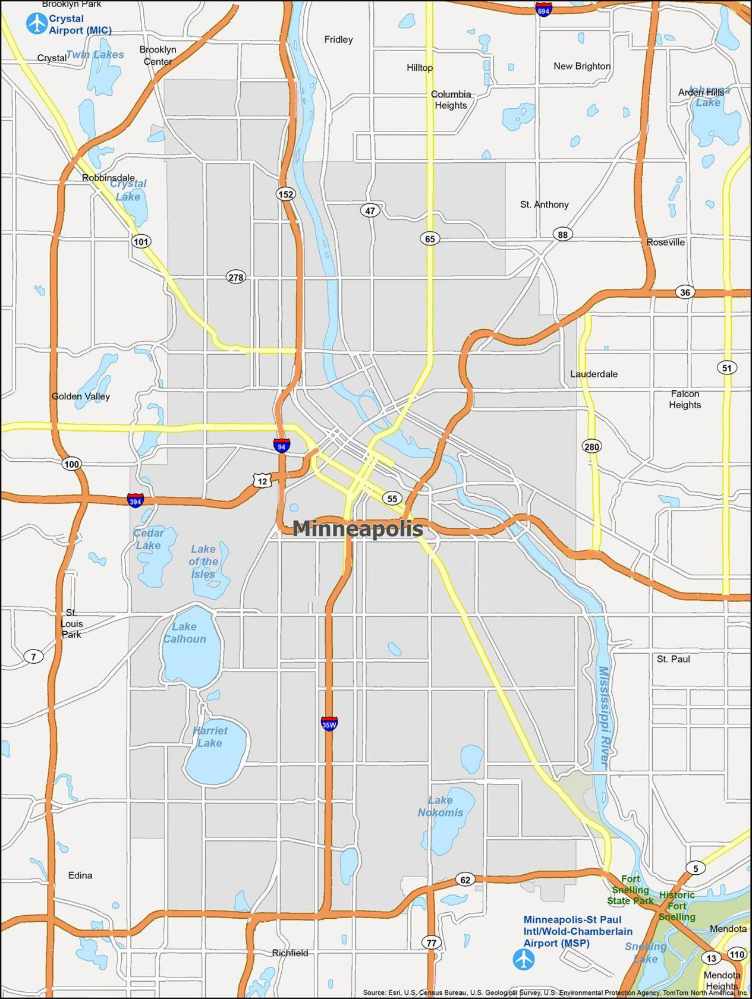

Alex's Coffee
Welcome to my coffee shop!
Alex's Coffee was founded in 2025 in Minneapolis, Minnesota.
On this page you will find the location and the hours of the shop.

Welcome to my coffee shop!
Alex's Coffee was founded in 2025 in Minneapolis, Minnesota.
On this page you will find the location and the hours of the shop.
Alex's Coffee is located in Minneapolis, Minnesota.
Come visit us when we're open!